실내건축기사(구) (2016-10-01 기출문제)
1과목: 실내디자인론
1. 주택의 거실계획에 관한 설명으로 옳지 않은 것은?
- 실내의 다른 공간과 유기적으로 연결될 수 있도록 통로화시킨다.
- 거실을 가능한 남향으로 하여 일조와 조망, 통풍이 잘되도록 한다.
- 거실의 규모는 가족수, 가족구성, 전체 주택의 규모등에 영향을 받는다.
- 거실의 평면은 정사각형보다 한 변이 너무 짧지 않은 직사각형이 가구배치 등에 효과적이다.
(정답률: 69%)

2. 실내기본요소 중 벽에 관한 설명으로 옳지 않은 것은?
- 공간의 형태에 영향을 끼치는 윤곽적 요소이다.
- 시점보다 낮은 벽은 공간의 폐쇄성이 요구되는 곳에 사용된다.
- 가구, 조명 등 실내에 놓여지는 설치물에 대한 배경적 요소이다.
- 공간을 에워싸는 수직적 요소로 수평방향을 차단하여 공간을 형성하는 기능을 갖는다.
(정답률: 86%)
3. 다의도형 착시의 사례로 가장 알맞은 것은?
- 헤링 도형
- 루빈의 항아리
- 쾨니히의 목걸이
- 펜로즈의 삼각형
(정답률: 74%)
4. 실내의 채광조절을 위한 장치에 속하지 않는 것은?
- 루버
- 커튼
- 블라인드
- 벤틸레이터
(정답률: 82%)
5. 디자인 원리에 관한 설명으로 옳지 않은 것은?
- 대비는 극적인 분위기를 연출하는데 효과적이다.
- 균형은 정적이든 동적이든 시각적 안정성을 가져올수 있다.
- 리듬은 규칙적인 요소들의 반복으로 나타나는 통제된 운동감이다.
- 강조는 규칙성이 갖는 단조로움을 극복하기 위해 공간 전체의 조화를 파괴하는 것이다.
(정답률: 75%)
6. 다음 설명에 알맞은 형태의 종류는?
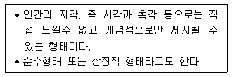
- 자연형태
- 인위형태
- 이념적 형태
- 추상적 형태
(정답률: 63%)
7. 전시공간의 순회 유형 중 연속순회형식에 관한 설명으로 옳지 않은 것은?
- 전시실이 연속적으로 연결된 형식이다.
- 많은 작품을 연속하여 전시할 수 있는 대규모 전시실에 적합하다.
- 비교적 동선이 단순하여 다소 지루하고 피곤한 느낌을 줄 수 있다.
- 한 실을 폐쇄하면 다음 공간으로의 이동이 불가능한 단점이 있다.
(정답률: 67%)
8. 은행의 실내계획에 관한 설명으로 옳지 않은 것은?
- 은행 고유의 색채, 심볼마크 등을 실내에 도입하여 이미지를 부각시킨다.
- 객장은 대기공간으로 고객에게 안전하고 편리한 서비스를 제공하는 시설을 구비하도록 한다.
- 영업장과 객장의 효율적 배치로 사무 동선을 단순화하여 업무가 신속히 처리되도록 한다.
- 도난방지를 위해 고객에게 심리적 긴장감을 주도록 영업장과 객장은 시각적으로 차단시킨다.
(정답률: 86%)
9. 한국의 전통가구 중 반닫이에 관한 설명으로 옳지 않은 것은?
- 반닫이는 우리나라 전역에 걸쳐서 사용되었다.
- 전면 상반부를 문짝으로 만들어 상하로 여는 가구이다.
- 반닫이는 주로 양반층에서 장이나 농 대신에 사용하던 가구이다.
- 반닫이 안에는 의복, 책, 제기 등을 보관하였고, 위에는 이불을 얹거나 항아리, 소품 등을 얹어 두었다.
(정답률: 83%)
10. 형태의 지각심리(게슈탈트 심리학)에 따른 그룹핑의 법칙에 속하지 않는 것은?
- 근접성
- 유사성
- 연속성
- 개방성
(정답률: 82%)
11. 상점의 진열대 배치형식 중 직렬배치형에 관한 설명으로 옳은 것은?
- 고객의 이동 흐름이 늦다는 단점이 있다.
- 고객의 통행량에 따라 부분적으로 통로 폭을 조절하기 어렵다.
- 진열대 등의 배치와 고객의 동선을 굴절 또는 곡선형으로 구성시킨 형식이다.
- 주통로 다음의 제2통로를 주통로에 대해 45˚가 이루어지도록 진열대를 배치한 형식이다.
(정답률: 70%)
12. 물체가 잘 보이도록 하는 조명의 조건, 즉 가시성을 결정하는 요소와 가장 거리가 먼 것은?
- 주변과의 대비
- 대상물의 밝기
- 대상물의 형태
- 대상물의 크기
(정답률: 76%)
13. 다음 설명과 관련된 실내디자인의 조건은?
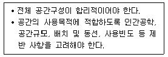
- 예술적 조건
- 심미적 조건
- 경제적 조건
- 기능적 조건
(정답률: 83%)
14. 생활에 적합한 건축을 위해 인체와 관련된 모듈의 사용에 있어 단순한 길이의 배수보다는 황금비례를 이용함이 타당하다고 주장한 사람은?
- 알바알토
- 르꼬르뷔지에
- 월터 그로피우스
- 미스반데로에
(정답률: 84%)
15. 건축화조명을 직접조명방식과 간접조명방식으로 구분할 경우, 다음 중 직접조명방식에 속하는 것은?
- 코브 조명
- 코퍼 조명
- 광천장 조명
- 밸런스 조명(상향조명)
(정답률: 63%)
16. 다음 설명에 알맞은 실내디자인 프로세스에 있어서의 아이디어 창출기법은?
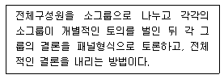
- 시네틱스
- 버즈 세션
- 롤 플레잉
- 브레인 스토밍
(정답률: 58%)
17. 사무소 건축과 관련하여 다음 설명에 알맞은 용어는?
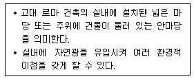
- 코어
- 바실리카
- 아트리움
- 오피스 랜드스케이프
(정답률: 81%)
18. 다음 설명에 알맞은 의자의 종류는?
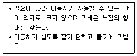
- 카우치
- 이지 체어
- 풀업 체어
- 체스터필드
(정답률: 76%)
19. 사무소 건축의 코어 유형에 관한 설명으로 옳지 않은 것은?
- 중심코어형은 유효율이 높은 계획이 가능한 형식이다.
- 편심코어형은 기준층 바닥면적이 작은 경우에 적합하다.
- 양단코어형은 2방향 피난에 이상적이며, 방재상 유리하다.
- 독립코어형은 코어 프레임을 내진구조로 할 수 있어 구조적으로 가장 바람직한 유형이다.
(정답률: 73%)
20. 호텔 객실의 평면계획에서 침대 및 가구의 배치에 영향을 끼치는 요인과 가장 거리가 먼 것은?
- 객실의 층수
- 욕실의 위치
- 반침의 위치
- 실의 폭과 길이의 비
(정답률: 83%)
2과목: 색채학
21. 문·스펜서의 색채조화에 적용되는 미도의 일반적 논리가 아닌 것은?
- 균형 있게 잘 선택된 무채색의 배색 미도가 높다.
- 등색상의 조화는 매우 쾌적한 경향이 있다.
- 등색상 및 등채도의 단순한 배색이 미도가 높다.
- 명도차이가 작을수록 미도가 높다.
(정답률: 58%)
22. Munsell 표색계에 기본을 둔 표준색표의 구성에서 R의 경우 1R, 2R, 3R,.......10R 로 10등분하여 나눈다. 다음 중 5R 에 해당되는 색은?
- 스칼렛
- 다홍색
- 마젠타
- 빨강의 중심색
(정답률: 83%)
23. 반대색상의 배색은 어떤 느낌을 주는가?
- 화합적이고 고요하다.
- 정적이고 차분하다.
- 박력 있고 동적인 느낌을 준다.
- 대비가 약하고 안정감을 준다.
(정답률: 85%)
24. 색채미학은 세 가지 사고방식에 의해 탐구된다고 한다. 다음 중 이 사고방식과 관계가 없는 것은?
- 인상 - 시각적으로
- 표현 - 감정적으로
- 구성 - 상징적으로
- 사고 - 감각적으로
(정답률: 51%)
25. 다음 중 한국산업표준(KS)을 기준으로 기본색 빨강의 색상범위에 해당하는 것은?
- 5RP 3.5/4.5
- 5YR 8/4
- 10R 9/5
- 7.5R 4/14
(정답률: 74%)
26. 디지털 색채 시스템 중 HSB시스템에 대한 설명으로 틀린 것은?
- 먼셀의 색채개념인 색상, 명도, 채도를 중심으로 선택 하도록 되어 있다.
- 프로그램 상에서는 H모드, S모드, B모드를 볼 수 있다.
- H모드는 색상을 선택하는 방법이다.
- B모드는 채도 즉, 색채의 포화도를 선택하는 방법이다.
(정답률: 72%)
27. 잔상에 대한 설명 중 잘못된 것은?
- 부의 잔상은 망막의 자극이 사라진 후 원래의 자극과 반대되는 색을 느낀다.
- 정의 잔상의 예로 빨간 성냥불을 어두운 곳에서 계속 돌리면 길고 선명한 빨간 원을 그리는 것으로 느낀다.
- 잔상이란 어떤 자극을 주어 색각이 생긴 뒤에 자극을 제거한 후에도 그 흥분이 남아서 감각 경험을 일으키는것을 말한다.
- 보색잔상은 빨간 색을 보다가 흰 색면을 보면 청록으로 느껴지는 것으로 일종의 정의 잔상이다.
(정답률: 67%)
28. 디지털 색채체계의 유형에 대한 설명으로 틀린 것은?
- HSB : 색의 3가지 기본 특성인 색상, 채도, 명도에 의해 표현하는 방식이다.
- RGB : 컴퓨터 모니터와 스크린 같은 빛의 원리로 컬러를 구현하는 장치에서 사용된다.
- CMYK : 표현할 수 있는 컬러 범위는 RGB 형식보다 넓다.
- L*a*b* : CIE가 1976년에 추천하여 지각적으로 거의 균등한 간격을 가진 색공간에 의한 색상모형이다.
(정답률: 68%)
29. 풋고추가 녹색으로 보이는 이유는?
- 녹색광만 굴절하기 때문
- 녹색광만 반사하기 때문
- 녹색광만 투과하기 때문
- 녹색광만 흡수하기 때문
(정답률: 82%)
30. 푸르킨예 현상으로 옳은 것은?
- 밝은 곳에서 어두운 곳으로 갈수록 장파장의 감도가 높아진다.
- 밝은 곳에서 어두운 곳으로 갈수록 단파장의 감도가 높아진다.
- 밝은 곳에서 어두운 곳으로 갈수록 단파장의 색이 먼저 사라진다.
- 어두운 곳에서 밝은 곳으로 갈수록 장파장과 단파장의 감도가 떨어진다.
(정답률: 67%)
31. 색채의 시간성과 속도감에 대한 설명 중 옳은 것은?
- 3속성 중 명도가 주로 큰 영향을 미친다.
- 장파장의 색은 시간이 길게 느껴진다.
- 단파장의 색은 속도가 빠르게 느껴진다.
- 저명도의 색은 속도가 빠르게 느껴진다.
(정답률: 58%)
32. 오프셋 인쇄 과정에 있어서 기본 색도는?
- 6도
- 5도
- 4도
- 3도
(정답률: 52%)
33. 다음 색 중 보색 관계가 아닌 것은?
- 빨강 - 청록
- 노랑 - 남색
- 연두 - 보라
- 자주 - 주황
(정답률: 80%)
34. 색의 대비현상에 관한 설명으로 틀린 것은?
- 명도대비 : 명도가 다른 두 색이 서로의 영향으로 명도차가 더 크게 나타나는 현상
- 연변대비 : 두 색의 경계부분에서 색의 3속성별로 대비현상이 더욱 강하게 나타나는 현상
- 계시대비 : 어떤 색이 다른 색에 둘러 싸여 일정한 거리 이상에서 주변색과 같아 보이는 현상
- 보색대비 : 보색관계인 두 색이 서로의 영향으로 각각의 채도가 더 높게 보이는 현상
(정답률: 55%)
35. 동일 색상 내에서'톤을 겹친다.'라는 의미로 두 가지 색의 명도 차를 비교적 크게 두어 배색하는 방법은?
- 톤 온 톤(Tone on Tone) 배색
- 톤 인 톤(Tone in Tone) 배색
- 리피티션(Repetition) 배색
- 세퍼레이션(Separation) 배색
(정답률: 75%)
36. 오스트발트 표색계에서 무채색을 나타내는 원리는?
- 순색량 + 백색량 = 100%
- 백색량 + 흑색량 = 100%
- 순색량 + 회색량 = 100%
- 순색량 + 흑색량 + 백색량 = 100%
(정답률: 52%)
37. SD법으로 제품의 색채 이미지를 조사하려고 한다. 단어의 이미지가 잘못 짝지어진 것은?
- 부드럽다 - 딱딱하다
- 따뜻하다 - 차갑다
- 동적이다 - 정적이다
- 화려하다 - 아름답다
(정답률: 85%)
38. 색의 3속성에 관한 설명 중 틀린 것은?
- 순도란 채도의 개념이다.
- 명도는 색의 밝고 어둡기를 의미하며 V로 표기한다.
- 먼셀 색체계에서 채도 0은 무채색이고, 최고 채도 값은 10이다.
- 색의 3속성은 색상, 명도, 채도이다.
(정답률: 60%)
39. 채도에 대한 설명이 옳은 것은?
- 순색으로 반사율이 높은 색이 채도가 높다.
- 반사량이 적은 색이 채도가 높다.
- 채도에서는 포화도가 존재하지 않는다.
- 무채색도 채도 값이 있다.
(정답률: 72%)
40. 광원 앞에 투명한 색유리판을 계속 겹쳐 점점 어두워지는 것과 같은 색채 혼색법은?
- 감법혼색
- 가법혼색
- 중간혼색
- 연속혼색
(정답률: 67%)
3과목: 인간공학
41. 다음은 일반적인 연구조사에 사용되는 기준으로 무엇을 설명한 것인가?
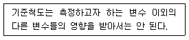
- 적절성
- 반복성
- 신뢰성
- 무오염성
(정답률: 71%)
42. 영상표시단말기(VDT)를 취급하는 근로자에게 제공할 키보드의 경사로 가장 적합한 각도는?
- 5～15˚
- 5～25˚
- 10～35˚
- 10～45˚
(정답률: 73%)
43. 일반적으로 보통글자의 경우 가장 알맞은 종횡비(세로 : 가로)는? (단, 계기판(計器板)이나 눈금에서의 경우 이다.)
- 2 : 1
- 2 : 3
- 3 : 2
- 4 : 3
(정답률: 56%)
44. 관절에서 몸의 뼈와 뼈를 결합시켜주는 기능을 하는 것은?
- 건(tendon)
- 근육(muscles)
- 척수(spinal cord)
- 인대(ligament)
(정답률: 71%)
45. 어떤 물체나 표면에 도달하는 빛의 밀도를 무엇이라 하는가?
- 휘도
- 조도
- 대비
- 반사율
(정답률: 67%)
46. 시력표에서 식별할 수 있는 최소표적의 시각이 2분(′)이라면 이 사람의 시력은 얼마인가?
- 0.5
- 1.0
- 1.5
- 2.0
(정답률: 61%)
47. 소음이 청력에 영향을 미치는 요인이 아닌 것은?
- 소음의 강약
- 소음의 속도
- 개인적인 감수성
- 소음의 고저인 주파수
(정답률: 35%)
48. 빛의 반사율에 관한 공식으로 맞는 것은?
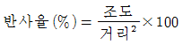
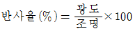
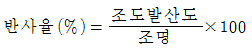
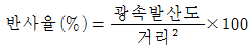
(정답률: 40%)
49. 촉각에 관한 설명으로 틀린 것은?
- 촉각과 압각의 경계는 분명하게 구분된다.
- 촉각수용기의 분포와 밀도는 신체 부위에 따라 다르다.
- 온도감각은 일반적으로 점막에는 거의 분포되어 있지않다.
- 통각은 피부뿐 아니라 피부 밑의 심부 및 내장에도 분포하고 있다.
(정답률: 50%)
50. 실내조명에 대한 일반적인 설명으로 가장 적합한 것은?
- 실내 장식품의 조명은 명시와 분위기를 각각 별도로 고려해야 한다.
- 조명기구는 조작이 흥미롭고, 복잡한 구조로 형성된 것이 바람직하다.
- 주택공간의 조명은 각 공간의 성격과 기능에 적합하도록 계획되어야 한다.
- 장시간의 시(視)작업이 필요한 작업공간에는 밝은 백열등을 사용하는 것이 가장 바람직하다.
(정답률: 78%)
51. 영상표시단말기(VDT) 취급에 관한 설명으로 틀린 것은?
- 눈으로부터 화면까지의 시거리는 40cm 이상을 유지 할 것
- 작업자의 시선은 수평선상으로부터 아래로 10～15°이내일 것
- 단색화면일 경우 색상은 일반적으로 어두운 배경에 밝은 청색 또는 적색문자를 사용할 것
- 작업자의 손목을 지지해 줄 수 있도록 작업대 끝면과 키보드의 사이는 15cm 이상을 확보할 것
(정답률: 79%)
52. 다음 도형을 가장 잘 설명하는 시지각 현상은?
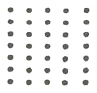
- 가속성
- 유사성
- 폐쇄성
- 접근성
(정답률: 47%)
53. 에너지대사율(RMR)을 나타내는 식으로 맞는 것은? (단, A는 작업시간의 기초대사량, B는 작업시간의 기초소 비량, C는 작업시간의 전체 산소소비량, D는 작업시간 내 안정시 산소소비량이다.)
- C-A/D
- A-C/D
- D-A/A
- C-D/A
(정답률: 50%)
54. 피부감각 기능이 아닌 것은?
- 온도를 지각한다.
- 모양을 지각한다.
- 평형을 유지한다.
- 위치를 지각한다.
(정답률: 62%)
55. 제어장치의 설계에 있어서 바람직하지 않은 것은?
- 제어장치는 작업원의 몸 중심선 상에 정확히 두는 것이 좋다.
- 가장 빈번하게 쓰는 제어장치는 팔꿈치에서 어깨 높이 사이에 둔다.
- 빨리 돌려야 하는 크랭크는 회전축이 신체전면에서 60°～90° 정도가 좋다.
- 제어장치의 운동과 위치는 이에 의하여 움직이는 표시장치 운동의 축과 평행이 되는 것이 좋다.
(정답률: 57%)
56. 머리둘레를 측정하는 방법 중 가장 적합한 것은?
- 눈썹보다 높은 위치에서 세 번 측정한 값의 중간값
- 눈썹보다 높은 위치에서 세 번 측정한 값의 평균값
- 눈썹보다 높은 위치에서 세 번 측정한 값의 최대값
- 눈썹보다 높은 위치에서 세 번 측정한 값의 최소값
(정답률: 54%)
57. 인간-기계 통합 체계에서 인간 또는 기계에 의해서 수행되는 기본 기능과 가장 거리가 먼 것은?
- 감지기능
- 상호보완기능
- 정보보관기능
- 정보처리 및 의사결정 기능
(정답률: 58%)
58. 인체의 생리적 부담 척도에 해당하지 않는 것은?
- 심박수
- 뇌전도
- 근전도
- 산소소비량
(정답률: 48%)
59. 동작경제의 원칙에 관한 설명으로 적합하지 않는 것은?
- 가능하다면 낙하식 운반 방법을 이용한다.
- 공구의 기능을 결합하여 사용하도록 한다.
- 양손은 움직일 때 가능하면 좌우대칭으로 한다.
- 계속적인 곡선운동보다는 갑작스런 방향전환을 하여 시간을 절약한다.
(정답률: 78%)
60. 착시에 관한 설명으로 적합하지 않은 것은?
- 물체를 볼 때 두 눈에 서로 다른 상이 비친다.
- 분할된 것은 분할되지 않은 것보다 크게 보인다.
- 같은 크기의 형을 상하로 겹치면 위쪽의 것이 커 보인다.
- 같은 크기의 원이 외측의 변화에 따라 크기가 달라보인다.
(정답률: 53%)
4과목: 건축재료
61. 다음 중 화성암에 속하지 않는 것은?
- 안산암
- 현무암
- 응회암
- 화강암
(정답률: 77%)
62. 고성능 AE 감수제에 관한 설명 중 옳지 않은 것은?
- 기존 감수제에 비해 더 많은 감수가 가능하나 슬럼프의 손실이 크다.
- 유동화 콘크리트 제조에 사용된다.
- 기존 감수제에 비해 콘크리트 운반거리 및 시간에 상대적으로 유리하다.
- 고내구성 콘크리트 제조에 사용될 수 있다.
(정답률: 52%)
63. 석고 플라스터에 대한 설명으로 옳지 않은 것은?
- 시멘트에 비해 경화속도가 느리다.
- 내화성을 갖고 있다.
- 경화, 건조시 치수 안정성을 갖는다.
- 물에 용해되는 성질이 있어 물을 사용하는 장소에는 부적합하다.
(정답률: 52%)
64. 비철금속의 성질에 관한 설명 중 옳은 것은?
- 동은 내알칼리성이 약하므로 콘크리트와 접하는 곳에서는 부식속도가 빠르다.
- 주석은 인체에 매우 유해한 성분이 있어 식기, 용기등으로 사용이 불가능하다.
- 알루미늄은 표면에 산화피막을 형성하기 때문에 내해 수성이 우수하다.
- 납은 천연수, 경수에 용해되기 때문에 수도관으로 사용시 주의가 필요하다.
(정답률: 56%)
65. 재료에 외력을 가할 때 작은 변형만 나타나도 파괴되는 성질은?
- 연성
- 취성
- 인성
- 탄성
(정답률: 71%)
66. 석재의 일반적 성질에 관한 설명으로 옳지 않은 것은?
- 석재의 강도는 비중에 비례한다.
- 석재의 공극률이 크면 동결융해 반복으로 동해하기 쉽다.
- 석재의 함수율이 높을수록 강도가 저하된다.
- 석재의 강도 중에서 가장 큰 것은 인장강도이며 압축, 휨 및 전단강도는 인장강도에 비하여 매우 작다.
(정답률: 59%)
67. 각 미장재료별 경화형태로 옳지 않은 것은?
- 회반죽 - 수경성
- 시멘트 모르타르 - 수경성
- 돌로마이트플라스터 - 기경성
- 테라조현장바름 - 수경성
(정답률: 61%)
68. 목재의 방부제에 해당하지 않는 것은?
- 황산구리 1% 용액
- 불화소다 2% 용액
- 테레핀유
- 염화아연 4% 용액
(정답률: 54%)
69. 콘크리트 배합설계에서 골재의 수분함유상태의 기준으로 옳은 것은?
- 절건상태
- 표건상태
- 기건상태
- 습윤상태
(정답률: 45%)
70. 가열가압에 의해 두꺼운 합판도 쉽게 접합할 수 있는 등 주로 목재 제품에 사용되며, 내수성, 내열성, 내한성이 우수한 접착제는?
- 카세인
- 아교
- 페놀수지 접착제
- 치오콜
(정답률: 71%)
71. 콘크리트의 배합에 사용되는 AE제에 관한 설명 중 옳지 않은 것은?
- 콘크리트의 작업성 및 동결융해 저항성능을 향상시키기 위해 사용한다.
- 동결융해저항성의 향상을 위한 AE콘크리트의 최적 공기량은 3～5% 정도이다.
- AE제를 사용하지 않는 콘크리트 중에 함유된 부정형한 기포를 연행된 공기(entrained air)라고 한다.
- 플레인콘크리트와 동일 물-시멘트비의 경우 공기량이 1% 증가함에 따라 약 4～6%의 압축강도가 저하된다.
(정답률: 66%)
72. 다음 각 재료와 그 재료의 성질을 평가하는 주요인 자가 서로 관계 없는 것끼리 짝지어진 것은?
- 시멘트 - 분말도
- 골재 - 입도
- 철근 - 연신율
- 콘크리트 –연화점
(정답률: 67%)
73. 포틀랜드시멘트 제조시 석고를 넣는 주된 이유는?
- 강도를 높이기 위하여
- 클링커(clinker)를 쉽게 만들기 위하여
- 응결속도를 조정하기 위하여
- 분말도를 높이기 위하여
(정답률: 66%)
74. 다음 중 열경화성 수지에 속하는 것은?
- 불소수지
- 알키드수지
- 폴리에틸렌수지
- 염화비닐수지
(정답률: 38%)
75. 목재의 일반적 특성에 해당하지 않는 것은?
- 열전도율이 작다.
- 비강도(比强度)가 크다.
- 차음성이 작다.
- 섬유방향에 따라 강도차이가 있다.
(정답률: 66%)
76. 수장 및 장식용 금속제품으로 천장, 벽 등에 보드를 붙이고 그 이음새를 감추는데 사용하는 것은?
- 코너비드
- 조이너
- 펀칭메탈
- 스팬드럴 패널
(정답률: 70%)
77. 목재바탕의 무늬를 돋보이게 할 수 있는 도료는?
- 클리어래커
- 에나멜페인트
- 수성페인트
- 유성페인트
(정답률: 73%)
78. 스트레이트아스팔트와 비교한 합성고무 혼입 아스팔트의 특징이 아닌 것은?
- 감온성이 크다.
- 인성이 크다.
- 내노화성이 크다.
- 탄성 및 충격저항이 크다.
(정답률: 47%)
79. 각재의 마구리 치수가 12cm×12cm, 길이가 240cm, 목재의 건조 전 질량이 25kg, 절대건조상태가 될 때까지 건조 후 질량이 20kg 이었다면 이 목재의 함수율을 구하면?
- 10%
- 15%
- 20%
- 25%
(정답률: 50%)
80. MDF의 특성에 관한 설명 중 옳지 않은 것은?
- 한번 고정철물을 사용한 곳에는 재시공이 어렵다.
- 천연목재보다 강도가 크고 변형이 적다.
- 재질이 천연목재보다 균일하다.
- 무게가 가볍고 습기에 강하다.
(정답률: 73%)
5과목: 건축일반
81. 조적조 벽체상부에 테두리보를 설치하는 가장 중요한 이유는?
- 내력벽을 일체로 하여 건물을 안정시키기 위해서
- 벽의 개구부 설치를 쉽게 하기 위해서
- 벽의 미장마감을 쉽게 하기 위해서
- 철근배근을 적게 하기 위해서
(정답률: 76%)
82. 다음 한국의 전통가구 중 주로 사랑방에서 쓰이는 것은?
- 연상
- 장
- 반닫이
- 좌경
(정답률: 42%)
83. 다음 조건으로 해당 층에 대한 무창층 여부를 판단하고자 한다. 판단결과로 가장 적합한 것은? (단, 조건의 창과 문은 화재예방, 소방시설 설치·유지 및 안전관리에 관한 법률 시행령 제2조의 개구부 조건을 모두 만족한다.)
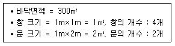
- 설치된 창의 개수가 기준을 초과하여 무창층이 아니다.
- 개구부의 면적의 합계가 기준을 초과하여 무창층이 아니다.
- 설치된 문의 개수가 기준을 초과하여 무창층이 아니다.
- 개구부의 면적의 합계가 기준을 만족하여 무창층에 해당된다.
(정답률: 60%)
84. 화재가 발생할 경우 사용하는 피난설비(피난하기 위하여 사용하는 기구 또는 설비)를 구성하는 제품 또는 기기에 해당되지 않는 것은?
- 누전경보기
- 공기호흡기
- 통로유도등
- 완강기
(정답률: 69%)
85. 관람석 또는 집회실로부터의 출구를 건축 관계법령에 따라 설치하여야 하는 건축물의 용도가 아닌 것은?
- 종교시설
- 장례식장
- 위락시설
- 문화 및 집회시설 중 전시장
(정답률: 66%)
86. 목구조 부재간 맞춤의 연결이 옳지 않은 것은?
- 왕대공과 평보 - 짧은장부맞춤
- 기둥과 층도리 - 안장 맞춤
- 왕대공과 마룻대 - 가름장 장부맞춤
- 멍에와 장선 - 걸침턱 맞춤
(정답률: 38%)
87. 로마건축의 판테온에 관한 설명으로 옳지 않은 것은?
- 사각형 평면과 원형 평면으로 이루어진다.
- 채광은 벽에 설치된 7개의 니치(niche)에서 한다.
- 현관에 8개의 코린티안 주범의 기둥이 있다.
- 원형평면 부분을 로툰다(rotunda)라고 한다.
(정답률: 56%)
88. 건축물에 설치하는 회전문의 설치기준으로 옳지 않은 것은?
- 회전문의 위치는 계단이나 에스컬레이터로부터 2m이상 거리를 둘 것
- 회전문의 회전속도는 분당회전수가 8회를 넘지 아니하도록 할 것
- 회전문과 문틀사이는 5cm 이상 간격을 확보하고 틈사이를 고무와 고무펠트의 조합체 등을 사용하여 신체나 물건 등에 손상이 없도록 할 것
- 회전문은 사용에 편리하게 양 방향으로 회전할 수 있는 구조로 할 것
(정답률: 75%)
89. 건축물의 피난·방화구조 등의 기준에 관한 규칙상 거실의 용도에 따른 조도기준이 높은 것에서 낮은 순서로 올바르게 나열된 것은? (단, 바닥에서 85센티미터의 높이에 있는 수평선의 조도)
- 거주(독서) - 작업(검사) - 집무(일반사무) - 집회(공연 · 관람)
- 작업(검사) - 거주(독서) - 집무(일반사무) - 집회(공연 · 관람)
- 작업(검사) - 집무(일반사무) - 거주(독서) - 집회(공연 · 관람)
- 집회(공연 · 관람) - 거주(독서) - 집무(일반사무) - 작업(검사)
(정답률: 67%)
90. 서양건축양식의 역사 순서를 옳게 나열한 것은?
- 그리스 - 로마 - 비잔틴 - 로마네스크 - 고딕 - 르네상스 - 바로크
- 그리스 - 로마 - 비잔틴 - 로마네스크 –르네상스 - 고딕 –바로크
- 그리스 - 로마 - 비잔틴 - 르네상스 - 로마네스크 - 고딕 - 바로크
- 그리스 - 로마 - 비잔틴 - 고딕 - 로마네스크 - 르네상스 –바로크
(정답률: 55%)
91. 건축물의 건축주가 관련법령에 따른 착공신고를 하는 때에 해당 건축물의 설계자로부터 구조 안전의 확인 서류를 받아 허가권자에게 제출하여야 하는 경우의 건축물 기준으로 옳지 않은 것은?(오류 신고가 접수된 문제입니다. 반드시 정답과 해설을 확인하시기 바랍니다.)
- 층수가 3층 이상인 건축물
- 높이가 13m 이상인 건축물
- 처마높이가 9m 이상인 건축물
- 기둥과 기둥사이의 거리가 9m 이상인 건축물
(정답률: 64%)
92. 건축허가 시 미리 소방본부장 및 소방서장의 동의를 받아야 하는 노유자시설 및 수련시설의 최소 연면적 기준은?
- 50m2이상
- 100m2이상
- 150m2이상
- 200m2이상
(정답률: 57%)
93. 다음은「건축물의 구조기준 등에 관한 규칙」에 따른 조적식구조 개구부의 구조에 관한 사항이다. ( )안에들어갈 내용으로 옳은 것은?
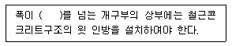
- 1.2m
- 1.5m
- 1.8m
- 2.0m
(정답률: 45%)
94. 총 층수가 1층인 목구조 건축물에서 일반적으로 사용되지 않는 부재는?
- 토대
- 통재기둥
- 멍에
- 중도리
(정답률: 62%)
95. 다음은「건축물의 피난·방화구조 등의 기준에 관한 규칙」 중 내화시험에 따른 방화문의 성능기준에 관한 사항이다. ( )안에 들어갈 내용으로 옳은 것은?
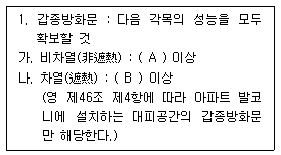
- A : 1시간, B : 50분
- A : 1시간, B : 30분
- A : 2시간, B : 50분
- A : 2시간, B : 30분
(정답률: 75%)
96. 고딕 건축양식의 특징이 아닌 것은?
- 첨두아치(pointed arch)
- 리브볼트(rib vault)
- 파일론(pylon)
- 플라잉버트레스(flying buttress)
(정답률: 54%)
97. 난방설비를 개별난방방식으로 하는 경우에 난방구획마다 내화구조로 된 벽·바닥과 갑종방화문으로 된 출입문으로 구획하여야 하는 건축물은?
- 공동주택
- 오피스텔
- 숙박시설
- 학교
(정답률: 58%)
98. 방염성능기준 이상의 실내장식물을 설치하여야 하는 특정소방대상물에 해당하지 않는 것은?
- 아파트를 제외한 11층 이상 건축물
- 다중이용업의 영업장
- 옥내에 있는 수영장
- 노유자시설
(정답률: 74%)
99. 지하 3층 지상 12층 규모의 전신전화국으로 각층의 바닥면적은 2,000m2 이고 각층 거실면적은 각층 바닥면적의 80%일 경우 최소로 필요한 승용승강기 대수는? (단, 승용승강기는 15인승이며 각층의 층고는 4m임)
- 3대
- 4대
- 5대
- 6대
(정답률: 50%)
100. 문화 및 집회시설(전시장 및 동·식물원은 제외)의 관람석 또는 집회실로서 그 바닥면적이 200m2 이상인 것의 반자의 높이는 최소 얼마 이상이어야 하는가? (단, 기계환기장치를 설치하지 않은 경우)
- 3m
- 3.5m
- 4m
- 4.5m
(정답률: 71%)
6과목: 건축환경
101. 다음의 열환경 지표 중 복사열의 영향을 고려하지 않은 것은?
- 유효온도
- 작용온도
- 등가온도
- 수정유효온도
(정답률: 46%)
102. 온수난방 방식에 관한 설명으로 옳지 않은 것은?
- 증기난방에 비해 예열시간이 짧다.
- 온수의 현열을 이용하여 난방하는 방식이다.
- 한랭지에서는 운전정지 중에 동결의 위험이 있다.
- 보일러 정지 후에도 여열이 남아 있어 실내 난방이 어느 정도 지속된다.
(정답률: 74%)
103. 다음의 광원 중 평균 연색평가수(Ra)가 가장 낮은 것은?
- 할로겐 램프
- 주광색 형광등
- 고압 나트륨램프
- 메탈 할라이드램프
(정답률: 69%)
104. 다중이용시설 등의 실내공기질관리법령에 따른 실내공간오염물질에 속하지 않는 것은?
- 석면
- 라돈
- 오존
- 이산화유황
(정답률: 50%)
1⑤. 크기가 2m×0.8m, 두께 40mm, 열전도율이 0.14W/m·K인 목재문의 내측 표면온도가 15℃, 외측 표면온도가 5℃일 때, 이 문을 통하여 1시간 동안에 흐르는 전도열량은?
- 0.⑤6W
- 0.56W
- 5.6W
- 56W
(정답률: 30%)
106. 다음 중 명시적 조명의 적용이 가장 곤란한 곳은?
- 교실
- 서재
- 집무실
- 레스토랑
(정답률: 69%)
107. 1,000[cd]의 전등이 2m 직하에 있는 책상 표면을 비추고 있을 때, 이 책상 표면의 조도는?
- 200[lx]
- 250[lx]
- 500[lx]
- 1,000[lx]
(정답률: 56%)
108. 다음 중 실내압력을 정압(+)으로 유지하여야 바람직한 공간은?
- 주방
- 화장실
- 수술실
- 회의실
(정답률: 77%)
109. 소음의 분류 중 음압 레벨의 변동폭이 좁고, 측정자가 귀로 들었을 때 음의 크기가 변동하고 있다고는 생각되지 않는 종류의 음은?
- 변동소음
- 간헐소음
- 충격소음
- 정상소음
(정답률: 75%)
110. 다음 중 벽체의 차음성능을 높이기 위한 방법과 가장 거리가 먼 것은?
- 벽체의 기밀성을 높인다.
- 벽체의 투과손실을 낮춘다.
- 음에 대한 반사율을 높인다.
- 무겁고 두꺼운 재료를 사용한다.
(정답률: 61%)
111. 국소식 급탕방식에 관한 설명으로 옳지 않은 것은?
- 급탕개소마다 가열기의 설치 스페이스가 필요하다.
- 급탕개소가 적은 비교적 소규모의 건물에 채용된다.
- 급탕배관의 길이가 길어 배관으로부터의 열손실이 크다.
- 용도에 따라 필요한 개소에서 필요한 온도의 탕을 비교적 간단하게 얻을 수 있다.
(정답률: 64%)
112. 분전반에 관한 설명으로 옳지 않은 것은?
- 분전반은 각 층마다 설치마다.
- 분전반은 분기회로의 길이가 30m 이상이 되도록 설계된다.
- 분전반은 매입형, 반매입형, 노출벽부형과 전기 전용실에 설치 가능한 자립형이 있다.
- 분전반은 실내의 사용성을 고려하여 복도 또는 코어 부분에 설치하고 전기 배선용 샤프트(ES)가 설치된 경우 ES내에 수납한다.
(정답률: 58%)
113. 다음 설명에 알맞은 급수방식은?
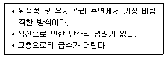
- 고가탱크방식
- 압력탱크방식
- 수도직결방식
- 펌프직송방식
(정답률: 73%)
114. 실내 조도가 옥의 조도의 몇 %에 해당하는가를 나타내는 값은?
- 주광률
- 보수율
- 반사율
- 조명률
(정답률: 68%)
115. 단열재가 갖추어야 할 요건으로 옳지 않은 것은?
- 경제적이고 시공이 용이할 것
- 가벼우며 기계적 강도가 우수할 것
- 열전도율, 흡수율, 수증기 투과율이 높을 것
- 내구성, 내열성, 내식성이 우수하고 냄새가 없을 것
(정답률: 68%)
116. 임의의 실내 공간이 사빈(Sabine)의 잔향이론에 따른다고 가정할 때, 실용적이 2배로 증가하면 잔향시간은?
- 1/2로 감소
- 1/4로 감소
- 2배 증가
- 4배 증가
(정답률: 47%)
117. 인체의 열적 쾌적감에 영향을 미치는 물리적 온열 4요소에 속하지 않는 것은?
- 기온
- 습도
- 기류
- 공기의 청정도
(정답률: 75%)
118. 흡음재료에 관한 설명으로 옳은 것은?
- 판진동 흡음재의 흡음판을 기밀하게 접착할수록 흡음률이 커진다.
- 판진동 흡음재의 흡음판은 막진동하기 쉬운 얇은 것 일수록 흡음률이 낮다.
- 다공성 흡음재는 중·고주파에서의 흡음률은 크지만 저주파수에서는 급격히 저하된다.
- 공동공명기는 배후 공기층의 두께를 증가시키면 최대 흡음률의 위치가 고음역으로 이동한다.
(정답률: 50%)
119. 습공기를 가습하였을 때의 상태변화로 옳은 것은? (단, 건구온도는 일정하다.)
- 엔탈피가 커진다.
- 노점온도가 낮아진다.
- 습구온도가 낮아진다.
- 절대습도가 작아진다.
(정답률: 56%)
120. 자연환기에 관한 설명으로 옳지 않은 것은?
- 풍력환기는 건물의 외벽면에 가해지는 풍압이 원동력이 된다.
- 일반적으로 공기 유입구와 유출구 높이의 차가 클수록 중력환기량은 많아진다.
- 자연환기량은 개구부의 위치와 관련이 있으며, 개구부의 면적에는 영향을 받지 않는다.
- 바람이 있을 때에는 중력환기와 풍력환기가 경합하므로 양자가 서로 다른 것을 상쇄하지 않도록 개구부의 위치에 주의한다.
(정답률: 75%)
"실내의 다른 공간과 유기적으로 연결될 수 있도록 통로화시킨다."는 거실이 다른 공간과 자연스럽게 연결되어 사용하기 편리하도록 하는 것을 의미합니다. 예를 들어, 거실과 주방이 연결되어 있으면 요리를 하면서도 가족들과 대화를 나눌 수 있고, 거실과 베란다가 연결되어 있으면 실내와 실외를 자유롭게 오가며 쾌적한 환경을 유지할 수 있습니다.